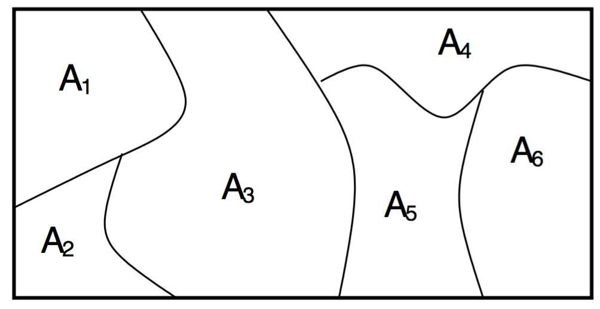
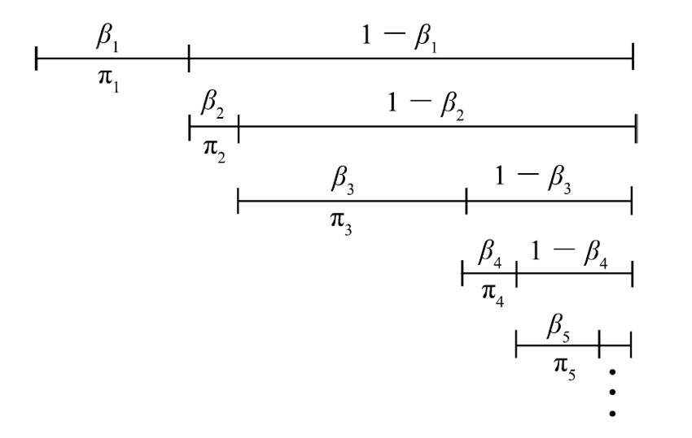
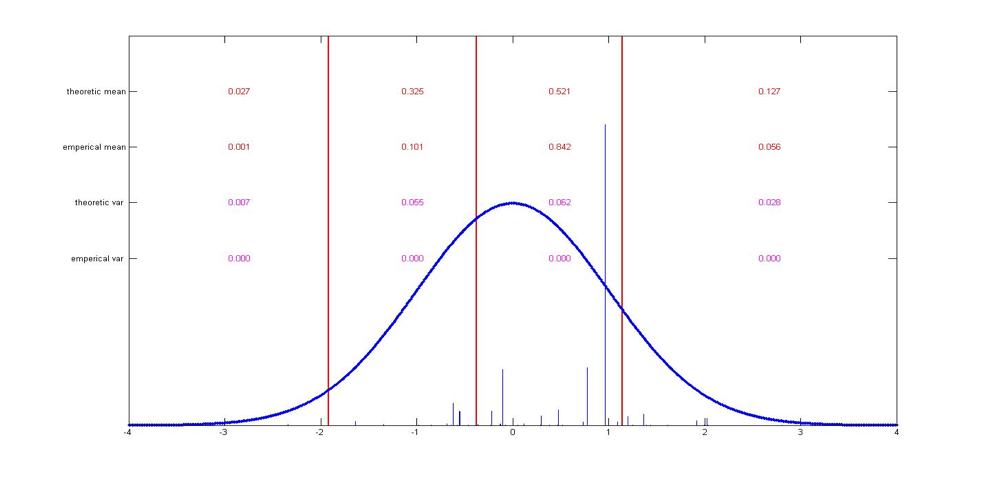
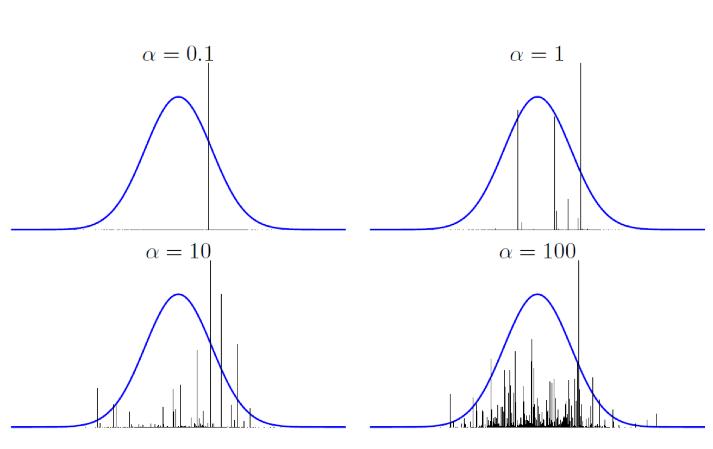

A Dirichlet process (DP) is a random probability measure G over measure space Θ such that for any finite set of measurable sets A1,…,AK partitioning Θ, we have
(G(A1),…,G(AK))∼Dir(αH(A1),…,αH(AK))
- H: Base distribution
- α: concentration parameter

Properties (derive from the mean and variance of the Dirichlet distribution)
E(G(Ai))=H(Ai)
Var(G(Ai))=H(Ai)(1−H(Ai))α+1
- α→∞: Var(G(Ai))→0, G=H.
- α→0: Var(G(Ai))→0, Var(G(Ai))→H(Ai)(1−H(Ai)) , similar to Bernoulli distribution.
Constructive definition: Stick-breaking constructioin
- βk∼Beta(1,α)
- θk∼H
- πk=βk∏k−1l=1(1−βl)
- G=∑∞k=1πkδθk

The result stick-breaking sampling has the property:
(∑A1πl1,…,∑AKπlK)∼Dir(αH(A1),…,αH(AK))

Examples of different
α:

Posterior:
G|θ1,θ2,…,θn∼DP(α+n,αH+∑ni=1δθiα+n)
Prediction/Drawing samples:
P(θn+1|θ1,θ2,…,θn)=E(G|θ1,θ2,…,θn)=αα+nH+∑ni=1δθiα+n
The prediction can be seen as a
Chinese Restaurant Process:
At any positive-integer time
n, the value of the process is a partition
Bn of the set {1, 2, 3, ... , n}, whose probability distribution is determined as follows. At time
n=1, the trivial partition { {1} } is obtained with probability 1. At time n + 1 the element n + 1 is either:
- added to one of the blocks of the partition Bn, where each block is chosen with probability |b|/(n+1) where |b| is the size of the block (i.e. number of elements), or
- added to the partition Bn as a new singleton block, with probability 1/(n+1).
Reference
Nonparametric Baysian Models: http://videolectures.net/mlss09uk_teh_nbm/
Chinese restaurant process: https://en.wikipedia.org/wiki/Chinese_restaurant_process